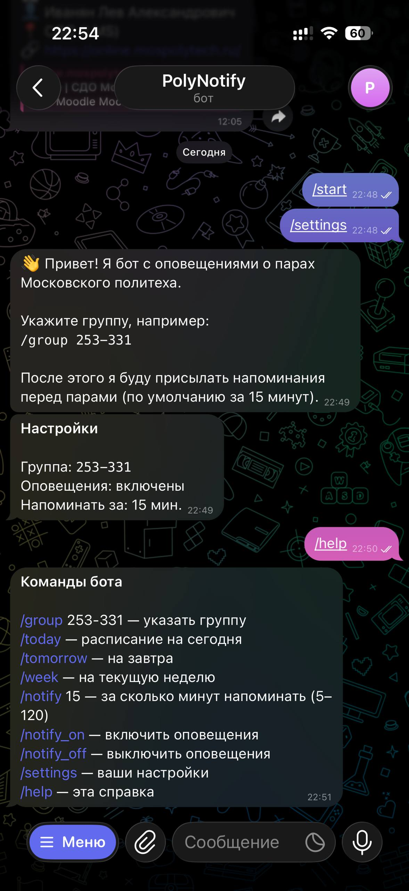
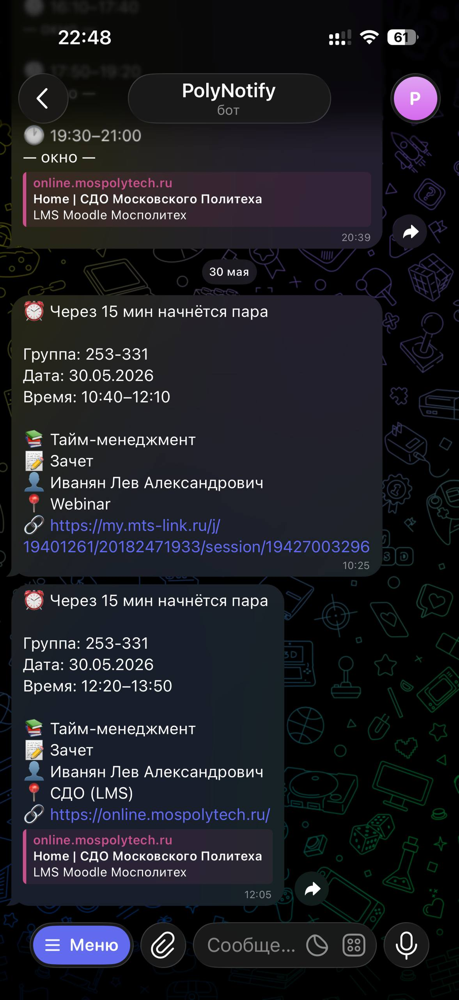

О проекте
Зачем нужен бот, как он устроен и что умеет.
Проблема
Расписание занятий в Политехе доступно на сайте rasp.dmami.ru, но
пользоваться им каждый день неудобно: нужно открыть сайт, найти свою группу,
посмотреть нужный день. А ещё легко забыть про пару или перепутать время. Хотелось
инструмент, который сам напомнит и покажет расписание в пару нажатий — там, где
студент и так проводит время, то есть в Telegram.
Решение
Telegram-бот, который хранит группу студента и по запросу отдаёт расписание, а также сам присылает напоминания перед парами. Взаимодействие построено на простых командах и кнопках, чтобы пользоваться мог любой студент без инструкции.
Что умеет бот
- Сохранять учебную группу пользователя командой
/group. - Показывать расписание на сегодня, завтра и на текущую неделю.
- Присылать напоминание за заданное время до начала пары (от 5 до 120 минут).
- Включать и выключать оповещения по желанию.
- Работать через удобную клавиатуру с кнопками, а не только командами.
Как это работает
Студент пишет боту, бот читает его настройки из базы (выбранную группу и параметры
оповещений), запрашивает актуальное расписание у сервиса rasp.dmami.ru,
формирует удобное сообщение и отправляет его в Telegram. Само расписание в базе не
хранится — оно каждый раз берётся из официального источника, поэтому остаётся актуальным.
Напоминания работают в фоне: бот раз в минуту сверяет расписание подписанных пользователей с текущим временем по Москве и, если до пары осталось заданное число минут, отправляет уведомление. Чтобы не присылать одно и то же напоминание дважды, бот отмечает уже отправленные оповещения.
Интерфейс бота
Примеры работы бота в Telegram: настройки группы и справка по командам, напоминание перед парой.

